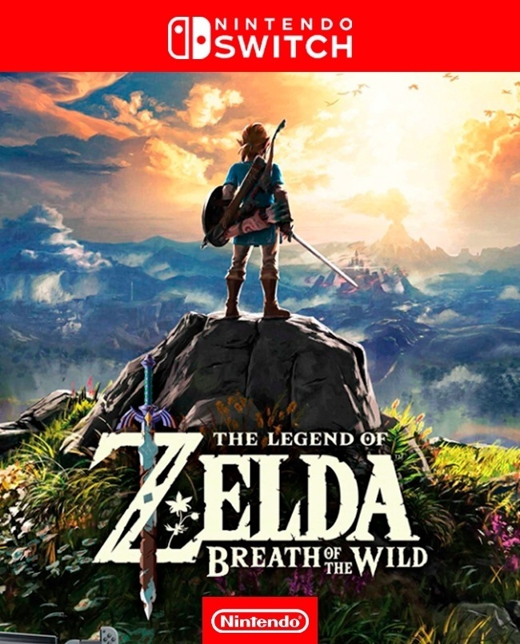

Persona 5 Royal:
A turn-based JRPG, It takes place in modern-day Tokyo and follows a high school student known by the pseudonym Joker who transfers to a new school after he is falsely accused of assault, and put on probation. Over the course of a school year, he and other students awaken to a special power, becoming a group of secret vigilantes known as the Phantom Thieves of Hearts. They explore the Metaverse, a supernatural realm born from humanity's subconscious desires, to steal malevolent intent from the hearts of adults. As with previous games in the series, the party battles enemies known as Shadows using physical manifestations of their psyche known as Personas. The game incorporates role-playing and dungeon crawling elements alongside social simulation scenarios.Final Fantasy VII Remake:
A remake of the classic 1997 JRPG, players control Cloud Strife, a former Shinra soldier turned mercenary who joins the eco-terrorist group AVALANCHE to fight the Shinra Corporation, who have been draining the planet's life energy. Every element has been remade, using real-time polygonal graphics as opposed to the pre-rendered environments of the original. The story includes major expansions to character development and some notable plot additions.
Mario Kart 8:
Mario Kart 8 is a 2014 kart racing game developed and published by Nintendo. It retains the gameplay of previous games in the Mario Kart series, with players controlling a Mario franchise character in races around tracks. Tracks are themed around locales from the Super Mario platform series and are populated with power-ups that help players gain advantages in races. Different difficulties are selectable prior to a race; harder difficulties make gameplay faster. In the new anti-gravity sequences, players drive on walls and ceilings. Mario Kart 8 contains a variety of single-player and local and online multiplayer games modes, including Grand Prix racing and arena-based battle modes.The Legend of Zelda: Breath of the Wild:
The Legend of Zelda: Breath of the Wild is a 2017 action-adventure game developed and published by Nintendo for the Nintendo Switch and Wii U. Set at the end of the Zelda timeline, the player controls an amnesiac Link as he sets out to save Princess Zelda and prevent Calamity Ganon from destroying the world. Players explore the open world of Hyrule while they collect items and complete objectives such as puzzles or side quests. Breath of the Wild's world is unstructured and encourages exploration and experimentation; the story can be completed in a nonlinear fashion. Red Dead Redemption 2:
he story is set in a fictionalized representation of the United States in 1899 and follows the exploits of Arthur Morgan, an outlaw and member of the Van der Linde gang, who must deal with the decline of the Wild West whilst attempting to survive against government forces, rival gangs, and other adversaries. The game is presented through first and third-person perspectives, and the player may freely roam in its interactive open world.